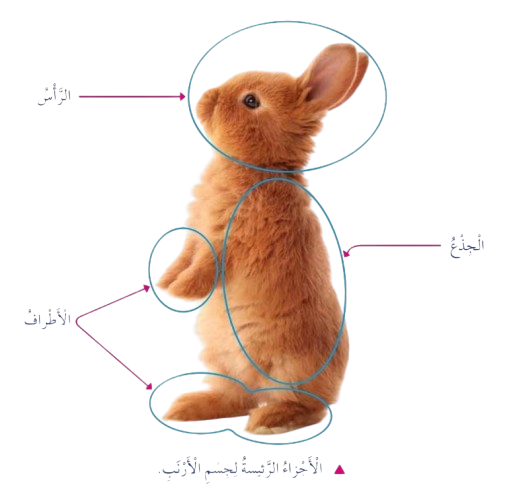
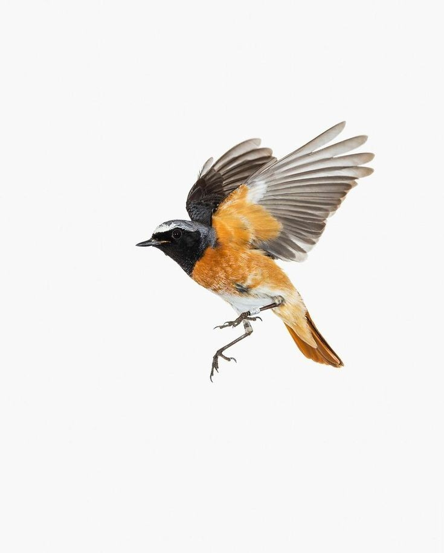
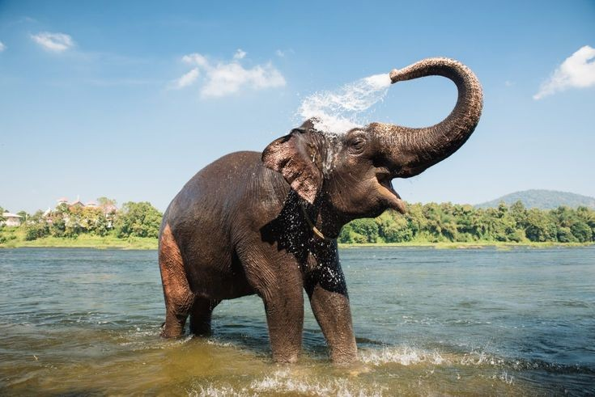

الدرس الثالث: الحيوانات وأجزاؤها
الفكرة الرئيسية
التعرف على أجزاء جسم الحيوانات الرئيسية (الرأس، الجذع، الأطراف) ووظائفها، وفهم كيف تستخدم الحيوانات هذه الأجزاء لتلبية احتياجاتها مثل البحث عن الطعام والحركة.

أتعرف أجزاء جسم الحيوان
ما أجزاء جسم الحيوان؟
تتكون أجسام الحيوانات من أجزاء رئيسية هي:
- الرأس: جزء من الجسم فيه العينان، والأذنان، والأنف، والفم.
- الجذع: جزء يتوسط جسم الحيوان، ويتكون من البطن، والصدر، والظهر.
- الأطراف: تشمل اليدين والرجلين.
سؤال
مم يتكون الجذع؟
الإجابة: يتكون الجذع من البطن، والصدر، والظهر.
وظائف أجزاء الحيوانات
فيم تستخدم الحيوانات أجزاءها؟
تستخدم الحيوانات أجزاءها لكي تعيش. فهي -مثلاً- تستخدم العينين، والأذنين، والأنف للبحث عن الطعام، وتستخدم الأطراف في أثناء الحركة.

القط 🐈 له أطراف قوية تساعده على الركض للحصول على غذائه.

الطيور 🕊️ لها أجنحة تساعدها على الطيران.

الفيل 🐘 يستخدم خرطومه في تناول الغذاء وشرب الماء.
سؤال
ما أجزاء القط التي تساعده على تناول غذائه؟
الإجابة: للقط 🐈 أطراف قوية تساعده على الركض للحصول على غذائه، ويستخدم العينين، والأذنين، والأنف للبحث عن الطعام.
نشاط تعليمي
تصنيف أجزاء الحيوانات
ارسم حيوانًا (مثل القط أو الأرنب) وسمّ أجزاءه (الرأس، الجذع، الأطراف). ثم ناقش كيف يستخدم الحيوان هذه الأجزاء للبحث عن الطعام أو الحركة.
الأدوات المطلوبة:
- ورق رسم
- ألوان
- صور حيوانات مختلفة